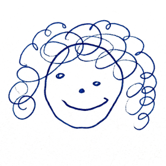

Locating restaurants…
0/0
No. —
—
—
Google Places didn't return a match for that name. Want to double-check the spelling, or save it anyway with just the name?
Helps fine-tune your pick's score.

I made you a guide of every NYC restaurant you've been to and want to try. Before we let you loose, let's capture your most accurate rankings — that way the map can sort everything by how much you actually liked it.
We'll go through your top picks, loved, and mixed restaurants in 3 batches (~71 total). Takes about 12–15 minutes. You can skip any pair you don't remember, and pause anytime.
13 restaurants. We'll figure out the order by asking you A vs B questions. Trust your gut — there's no wrong answer.
First one to anchor: —
Here's where everything landed:
Your rankings are saved and synced. You can sort the map by how much you liked everything, add new spots, and we'll fit them right into your list.
Are you sure you want to remove this restaurant from your guide? This can't be undone from the UI.